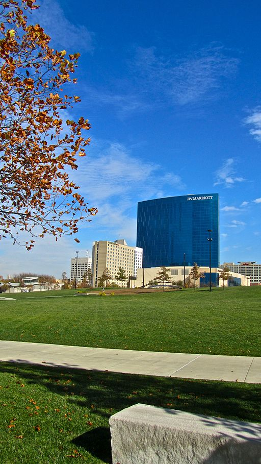

Parks
One of the most memorable parts of a BPA trip is the time spent together as chapter, exploring the world in an unstructured manner. Indianapolis provides plenty of exciting parks and open spaces just for this purpose. If you don't find one you like below, you can find a complete list of Indianapolis parks here.
White River State Park
If you'd like to explore the outdoors, White River State Park is the place for you.  Filled with greenery and open spaces, this 250 acre park is the perfect place to spend the day. In addition to McCormick's Rock (which celebrates the founding of Indianapolis), there are also many sculptures to discover scattered throughout the park. With the Eiteljorg Museum and the Indianapolis Zoo close by, it's quite easy to fill a whole afternoon's worth with a trip to this park. Special events also occur quite frequently, so be sure to check out their website before visiting so you can take advantage of all the happenings at this park.
Garfield Park
The oldest park in Indianapolis, Garfield Park still provides the city with a beautiful window to the outdoors. Complete with trails, tennis courts, picnic shelters, and beautiful bridges, visiting this park would be far from a waste of an afternoon. On the park grounds also lies the Garfield Park Conservatory and Sunken Garden. A part of the park since 1914, the conservatory features 10,000 square feet of foliage, all plants following the tropical theme. This part of the park costs $1 in general admission and is open from 10 to 5 most days.
Sahm Park
This park has only been around for fifty years or so, but that doesn't lessen the power of its open spaces and beautiful scenery. Sahm Park's main attraction has always been its outdoor aquatic center, however it also features choice picnic areas, tennis, basketball, and volleyball courts, and a disk golf course. This 85 acre park is certainly one of the best places to spend an afternoon.